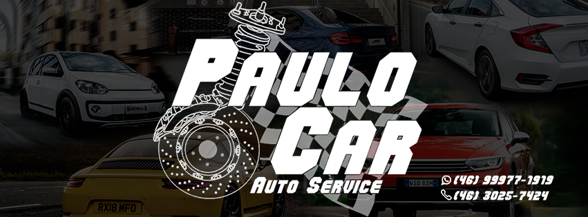
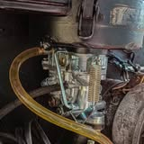

Mecânica de linha leve
Atendimento mecânico para automóveis de passeio.
MECÂNICA DE LINHA LEVE
Manutenção automotiva com atendimento próximo, explicação clara e serviços divulgados pela própria oficina.

Uma oficina local reconhecida nas avaliações por cuidado, transparência e confiança.
A Paulo Car Automecânica atende na Rua Tocantins, no bairro São Vicente. Em sua apresentação oficial, divulga serviços para veículos de linha leve e mantém contato direto pelo telefone e WhatsApp.
Ver Facebook oficial ↗Ver Instagram oficial ↗Serviços informados na apresentação pública da oficina no Facebook.
Atendimento mecânico para automóveis de passeio.
Troca do óleo do motor conforme a necessidade do veículo.
Serviço de troca de óleo do câmbio divulgado pela oficina.
Atendimento nos sistemas de frenagem e suspensão.

Fale com a equipe, descreva o que está acontecendo e confirme a melhor solução para o seu veículo.
Conversar no WhatsApp ↗“Ótimo atendimento! Excelente trabalho, são muito queridos e atenciosos e explicam certinho o problema e o valor é justo!”
“Serviços ótimos, profissionais de qualidade e confiança. Melhor mecânico da cidade!”
“Transparência e compromisso com o cliente!”
São Vicente · Pato Branco – PR
CEP 85506-330
Segunda a sexta
08:00–12:00 · 13:00–18:00
Sábado e domingo: fechado